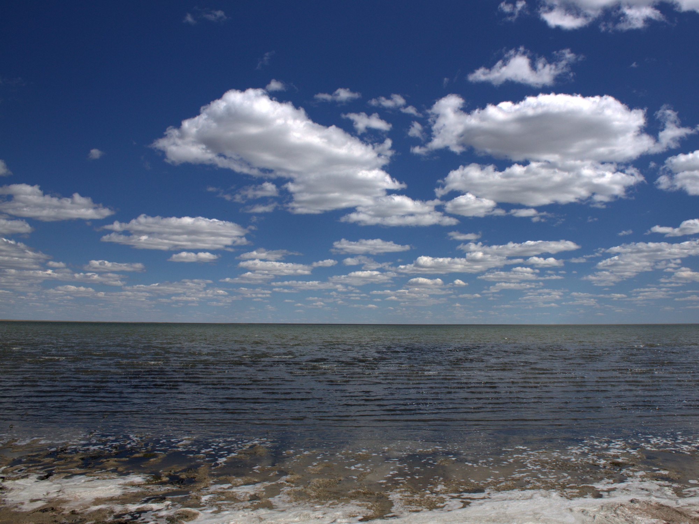
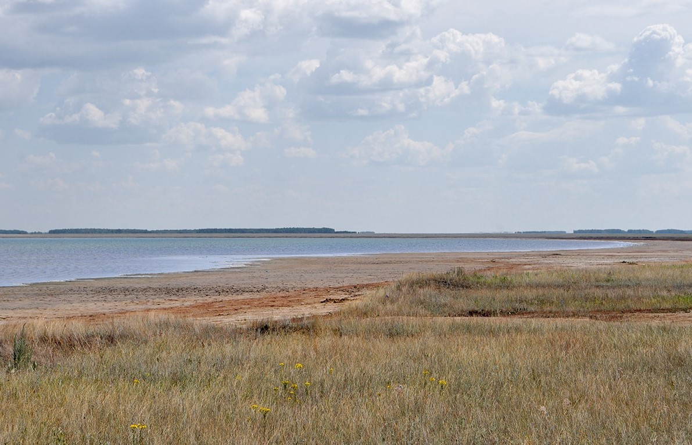

Озёра Омской области


Озеро Ульжай
Расстояние от центра Омска - 170 км
Время в пути - 2,5-3 часа
Лучшее время для отдыха - лето
Особенности - наличие лечебных грязей, бесплатный вход, разрешено купаться, имеет форму почти правильного круга
Озеро Ульжай - второе по величине солёное озеро в Омской области, находящееся в Черлакском районе, в 20 км от его административного центра. По мнению ученых, Ульжай, как и другие подобные соленые озера был оставлен ушедшим в конце палеогенового периода гигантским морем. Для таких водоемов характерны большие площади водной поверхности, хорошо выраженные формы котловины и крутые высокие склоны.
Озеро имеет форму почти правильного круга, с диаметром 4 км и площадью водного зеркала 14,5 кв. км. Северный склон Ульжая состоит из трех возвышающихся друг над другом террас общей высотой 6 — 8 м. Испещренные небольшими оврагами, южное и западное побережья — до 1,5 м. Восточный берег размыт. Как и на всем правобережье Иртыша в Черлакском районе, здесь активно происходят процессы оврагообразования и водной эрозии почвы. В некоторых местах впадины достигают уже 400 — 900 м в длину.
Озеро Ульжай находится в государственной собственности, каких-либо хозяйственных и жилых построек на берегах вокруг водоема нет. Рапа, покрывающая грязевые залежи, без цвета и запаха. Из-за преобладания в ней хлористого натрия характеризуется соленым вкусом с горчинкой. Дно в соленом озере плотное, покрыто слоем ила. Искупаться и не запачкаться в нем сложно, глубина водоема составляет всего 0, 3 — 1, 3 м. Но люди приезжают сюда именно за грязью. Набирают ее в емкости, принимают целительные ванны.

Лечебная грязь Ульжая представляет собой черную и маслянистую субстанцию, напоминающую пластилин, без яркого запаха. Применяется в виде ванн и местных аппликаций. Но даже если просто походить по озеру, польза будет несомненной. Тем более, что глубина водоема позволяет с легкостью дойти до его середины.По своему составу вещество относится к высокосортным сульфидно-иловым высокоминерализованным грязям. В нем преобладает сульфид железа, который придает субстанции темно-серый цвет. Из активных минералов присутствуют бишофит, бром, бор и др. А также содержатся водорастворимые соли, витамины, различные ферменты и пр.
Озеро Ульжай несильно богат растительным миром. Но всё равно вы можете найти там весьма восхитительные пейзажи степей.